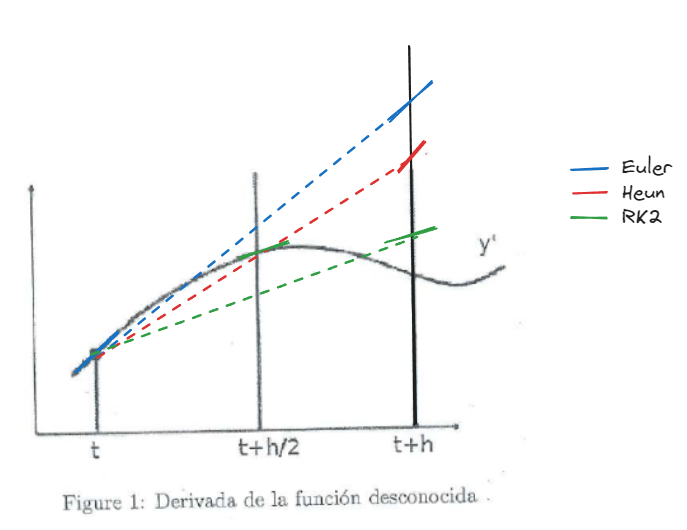

aControl Tema 1Febrero 28, 20211. La aceleración que sufre una pompa de jabón frente a un ventilador puede aproximarse mediante la siguiente ecuación diferencial:• dv
dt=10/x2-c/m * v• Siendo x la distancia de la partícula al ventilador (coincide con la posición), c=0.01 el coeficiente de arrastre y m=0.02Kg la masa.• Condiciones iniciales: Considerar que la partícula parte del reposo (v=0) a 1m del ventilador (ver tabla).• Estimar la velocidad y la posición alcanzada por la partícula al cabo de 0.3 segundos mediante los métodos numéricos de Euler Explícito y Runge-Kutta 2. Considerar un paso de integración, dt, de 0.1 s. Resumir los resultados en las tablas siguientes e indicar las fórmulas empleada para aproximar x y v• en cada caso:Euler Explícito
t
x (posición)
dv
dt=10/x2-c/m ∙ v
vEuler
0
1
10
0
0.1
1
9.5
1
0.2
1.1
7.29
1.95
0.3
1.295
4.9514
2.023
→ Para t=0v0=0 m/sx = 1 ma0=10/12-0.01
0.02∙ 0=10 m/s2→ Para t=0.1v1=v0+a0∙dt=0 +10∙ 0.1=1 m/sx1= x0+v0∙dt=1+0∙0.1=1 ma1=10/12-0.01
0.02∙1=9.5 m/s2→ Para t=0.2v2=v1+a1∙dt=1+9.5∙0.1=1.95 m/sx2=x1+v1∙dt=1+1∙0.1=1.1 ma2=10/1.12-0.01
0.02∙1.95=7.28946 m/s2→ Para t=0.3v3=v2+a2∙dt=1.95+7.29∙0.1=2.023 m/sx3=x2+v2∙dt=1.1+1.95∙0.1=1.295 ma3=10/1.2952-0.01
0.02∙2.023=4.9514 m/s2Runge-Kutta 2
t
x (posición)
dv
dt=10/x2-c/m ∙ v
vRK2
0
1
10
0
0.1
1.05
8.58
0.975
0.2
1.19
6.19
1.73
0.3
1.39
4.02
2.23
→ Para t=0v0=0 m/sx = 1 m→ Para t=0.1k1=f(x0,v0)=10/12-0.01
0.02∙2.22955=4.02632 m/s22. Dado un muelle colgado de un techo que soporta una masa m. Escribe las siguientes dos funciones en (pseudocódigo, java(processing), c, python):• aceleracion(x,v), función que dada una posición de la masa descrita y su velocidad devuelva la aceleración resultante. Considerar un muelle con constante de amortiguación kd, de dureza ks y longitud de reposo L, además de m y g. (Fmuelle=ks(L-x)-kdv).
defaceleracion(x, v, m, k_s, L, k_d): g =9.81# Aceleración debido a la gravedad F_muelle = k_s *(L - x)- k_d * v a = F_muelle / m - greturn a
• heun(x,v), dado el estado (posición y velocidad) de la masa considerada en un instante dado, realiza un paso de integración (dt) mediante el método de Heun y aproxima el nuevo estado del objeto simulado.
defheun(x, v, dt):# Parámetros del sistema Ks =# constante de dureza Kd =# constante de amortiguación L =# longitud de reposo m =# masa g =# gravedad# Estimación de la aceleración en el tiempo actual a_current =(Ks *(L - x)- Kd * v)/ m# Estimación de la posición y velocidad en el siguiente paso usando la aproximación de Heun x_next_euler = x + v * dt v_next_euler = v + a_current * dt a_next_euler =(Ks *(L - x_next_euler)- Kd * v_next_euler)/ m# Estimación de la posición y velocidad en el siguiente paso usando el promedio de las aceleraciones x_next = x +0.5*(v + v_next_euler)* dt v_next = v +0.5*(a_current + a_next_euler)* dtreturn x_next, v_next
Marzo 28, 20191. La aceleración que sufre una pompa de jabón frente a un ventilador puede aproximarse mediante la siguiente ecuación diferencial:• dv
dt=g-c/m * v• Considerando que la velocidad al pasar el primer segundo es de 1 m/s (v(1)=1) y las siguentes constantes: g = 9,8 m/s2, c = 2.0, m= 80 kg.• A) Aproxima los valores de v para t=[1..2.5] con dt = 0.5 mediante los métodos de Euler explícito y Heun. Presenta una tabla resumen donde se vean los valores obtenidos (2decimales) y explica como se calcula cada columna.•
2=9.472576v(2.5)heun=v(2)heun+ apromedio * dt=15.384482 • B) Ahora añadimos un rozamiento, -k*v, siendo en este caso k=0,6. Calcula la nueva ecuación diferencial e intégrala con Euler explícito• nueva ecuación diferencial: dv
dt=g-c/m * v-k*v
t
dv
dt=g-c/m * v-k*v
v-Euler
1
9.175
1
1.5
6.31
5.58
2
4.16
9.03
2.5
2.86
11.10
→ Para t=1a(1)=g-c/m * v(1)-k*v(1)= 9.8-2.0/80*1-0.6*1=9.175→ Para t=1.5v(1.5)Eeuler= v(1)euler+ a(1) * dt = 1+9.175*0.5=5.5875a(1.5)=g-c/m * v(1.5)euler-k*v(1.5)euler= 9.8-2.0/80*5.5875-0.6*5.5875=6.307812 → Para t=2v(2)euler=v(1.5)euler+a(1.5) * dt = 9.028906a(2)=g-c/m * v(2)euler-k* v(2)euler= 9.8-2.0/80*9.028906-0.6*9.028906= 4.156934→ Para t=2.5v(2.5)euler=v(2)euler+a(2) * dt = 11.107373a(2)=g-c/m * v(2.5)euler-k*v(2.5)euler= 9.8-2.0/80*11.107373-0.6*11.107373=2.857892 La velocidad con el rozamiento es notablemente mas baja, y es debido a la fuerza de rozamiento que hace que el paracaidista vaya mas despacio. 2. La siguiente gráfica muestra un escenario con la derivada de una función desconocida en todo un intervalo de integración. Estima y dibuja el valor de la función al final del intervalo mediante todos los métodos vistos en clase.

Control Parcial 20211. La nave Perseverance desplegó su paracaídas a 11km del suelo Marciano con el objetivo de ralentizar su velocidad, desde los 2.099 km/h (583 m/s) hasta aproximadamente 320 m/s.Considerando que la aceleración que sufre la nave viene representada por la ecuación diferencial:dv
dt=Gm-1
m𝛼(t)v2• Gm=3.7 m/s2 es la aceleración producida por la gravedad Marciana.• m=625 Kg es la masa de la nave.• 𝛼(t) es la constante que modela la resistencia con el aire y que cambia en función del tiempo, es decir, si t < 1 seg. la nave está en caída libre y cuando t>1 seg. se considera que el paracaídas está abierto...𝛼(t)a
0.007
t<1
0.5
t⩾1
Considerando las condiciones iniciales mencionadas (t=0, v= 583.06 m/s, pos = 11000m), estimar la velocidad de la nave al cabo de 2 segundos mediante los métodos numéricos de Euler Explícito y Heun con un paso de integración (dt=0.5 s). Resumir los resultados en la tabla siguiente e indicar la fórmula empleada (relación entre las celdas) en cada caso. Dibujar una gráfica con las velocidades obtenidas y justificar los resultados.
2)∙0.5=343.6791 m/sTiene sentido porque la velocidad empieza a reducir drasticamente cuando se abre el paracaídas.Antes de eso no se aprecia diferencia.t=0, cae a la mismavelocidadt=1, se reduce drasti-camente la velocidad2. La figura muestra en función Y(t) (desconocida) en el intervalo [t,t+h]. Dibuja las pendientes empleadas por los métodos de Euler Explícito, Simpléctico y RK2 para estimar el valor de la función desconocida al final del intervalo. Mostrar también en la figura los puntos estimados por los tres métodos al final del intervalo indicando los errores cometidos por cada uno. (Recordar que la derivada de una función en un punto se corresponde con la pendiente del vector tangente en dicho punto).Euler ExplícitoRK2Calculamos la tangente en el inicio del intervaloCalculamos la tangente en el medio del intervaloy la transladamos al principioCalculamos la tangente al final del intervalo y la transladamos al principioEuler simpléctico3. Contesta brevemente a las siguientes cuestiones relacionadas con la práctica 1:• ¿Cuántas evaluaciones de la derivada se hacen en el método de RK4 en la práctica 1?¿Que función se usa para ello?• ¿Cuáles son las ecuaciones diferenciales del problema 2 de la práctica?• Indica para las siguientes situaciones del problema 1 de la práctica si contribuyen a que el sistema sea estable o inestable: – Ke muy bajo (cte. de elasticidad/dureza): – Kd a 0 (cte. de fricci´on con el aire): – Paso de simulaci´on alto: – Elongaciones de reposo muy bajas: – Masa alta:Control Final 22-231. Una burbuja de aire se desprende desde el fondo de un vaso de agua y se eleva a la superficie. La aceleración de la burbuja viene determinada por la flotabilidad y el arrastre viscoso del agua de acuerdo con la ecuación:a=80-16v(pies/s2)siendo v la velocidad en pies/s. Determina la posición (distancia recorrida) y la velocidad de la burbuja cuando llega a la superficie (longitud a recorrer x>0.2 pies) y comparar la respuesta con la solución analítica (v=3.998 pies/s). Emplear el método de Euler Explícito para integrar numéricamente las funciones necesarias con dt=0.02 y resumir en una tabla los resultados. Justifica los resultados obtenidos.Como no nos dan los datos ya puestos en la tabla como nos gusta, os hago el siguiente esquema:0.2 piesx = 0 piesa=80-16vv=0 pies/sdt=0.02 sComo nos dice que esta en el fondodel vaso, suponemos que x=0.Además supondremos que estaba en reposo,v=0, porque nos dice que se desprende del fondo
t
dv
dt=80-16v
x(posición)
vEuler-Explícito
0
80
0
0
0.02
54.4
0
1.6
0.04
36.992
0.032
2.688
0.06
25.1552
0.0858
3.4278
0.08
17.1056
0.1544
3.9309
0.1
11.6762
0.2330
4.2703
Para t=0x0= 0 piesv0=0 pies/sa0=80-16∙v0=80 pies/s2Para t=0.02v0.2=v0+a0∙dt=0+80∙0.02=1.6 pies/sx0.2=x0+v0∙dt=0 piesa0.2=80-16∙v0.2=80-16∙1.6=54.4 pies/s2Para t=0.04v0.4=v0.2+a0.2∙dt=1.6+54.4∙0.02=2.688 pies/sx0.4=x0.2+v0.2∙dt=0+1.6∙0.02=0.032 piesa0.4=80-16∙v0.4=80-16∙2.688=36.992 pies/s2Para t=0.06v0.06=v0.04+a0.04∙dt=2.688+36.992∙0.02=3.4278 pies/sx0.06=x0.04+v0.04∙dt=0.032+2.688∙0.02=0.0858 piesa0.06=80-16∙v0.06=80-16∙3.4278=25.1552 pies/s2Para t=0.08v0.08=v0.06+a0.06∙dt=3.4278+25.1552∙0.02=3.9309 pies/sx0.08=x0.06+v0.06∙dt=0.0858+3.4278∙0.02=0.1544 piesa0.08=80-16∙v0.08=80-16∙3.9309=17.1056 pies/s2Para t=0.1v0.1=v0.08+a0.08∙dt=3.9309+17.1056∙0.02=4.2703 pies/sx0.1=x0.08+v0.08∙dt=0.1544+3.9309∙0.02=0.2330 piesa0.1=80-16∙v0.1=80-16∙4.2703=11.6752 pies/s2Como ya hemos salido del vaso, es decir, x>0.2 pies acabamos la integración.